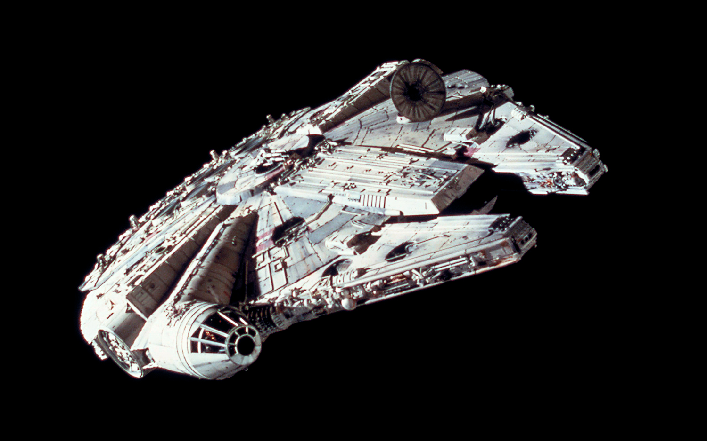
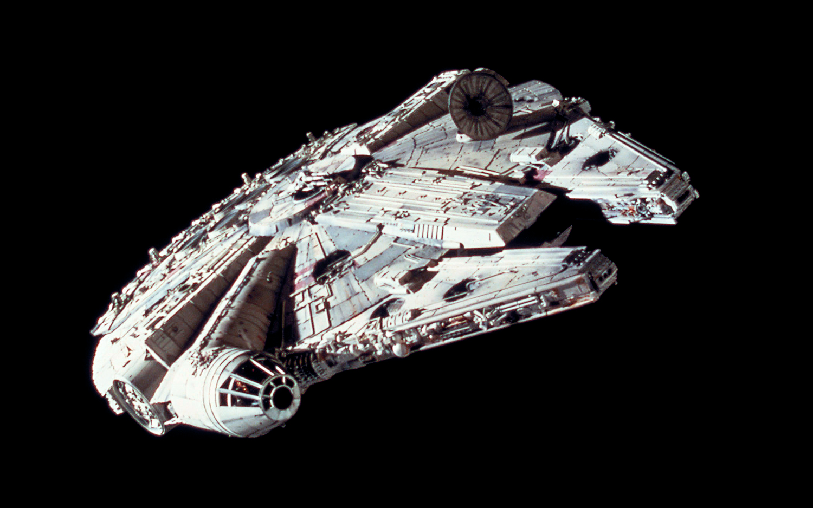

Final Hour

Role: Level & Sound Designer
Engine: Unity
Following a mission, the USS Chekibundi locked itself down. Samson, one of its officers, locked himself in the escape pod. The crew are at risk of dying, some already have, and he'll leave at the first sign he has to.
Speak to your friends, find the truth.
Brief: This game was created for the 1-Bit Game Jam! The theme was "You start with everything, and end with nothing!" It had the main constraint of only using two colours. (more info here!) https://itch.io/jam/1-bit-jam-n2
We had 8 days for this Jam and a team of 7 people.
DEVELOPMENT: LEVEL
Approaching this project, I worked closely with the narrative designer asking heaps of questions regarding the game’s story and environmental context. After discussions and reading over the script three times, I created a list of restraints for keeping the level design focused and within the scope this level - super important since it was a 1-week jam.
They are as follows:
It must take place on a spaceship stranded in space.
Must have several personal rooms for characters (1 for each personal item quest so at least 6 in total).
Bridge area with control room/panel.
An area with a refrigerator doesn’t have to be a kitchen.
It must show signs that there had been more people in the spaceship before the events of the game took place.
There must be a central area connecting all key areas.
Escape-pod area where the player interacts with Samson.
Early Designs and Challenges
Inspired by spaceships and architecture in Star Wars, Cowboy Bebop and Rick and Morty. I aimed for a retro sci-fi aesthetic, while not being too overly futuristic.I really liked the semi-claustrophobic mechanical feel in some of their designs, especially in star wars ships, These are the first sketches created for the level design.

 
These are my early paper sketches.

These are my early paper sketches.

As this was a 1 week jam, I didn't have a lot of time for iteration so I tried to stick with one of my initial concepts.
I wanted a ship design that felt almost circular to give easy paths leading to the main area connecting all the rooms. This design met all my needs the most and was my favourite, so I jumped straight into engine and started building it and testing the scale.
When I started building the level in Unity, I quickly realized that curved walls were difficult to work with using Unity’s primitives. Awkward geometry and alignment issues made the design non-viable, so I touched it up and made a digital draft in Photopea, covering the curved walls with straight ones in front of them. This was a valuable lesson in understanding how 2D designs translate into 3D space and a simple solution to an unforeseen issue.
This is the first rough digital draft created for the level design
After more communication with the narrative designer, they were happy with the design so I re-made it in higher quality, and got feedback from the rest of the team.
After even more reviews from the narrative designer and team, I refined the digital draft and started blocking out the playable areas in engine.
I left it up to the narrative designer to place the items for each fetch quest and position for each NPC.
To save time and create a more lived-in feel, I used barricades and furniture to block off non-playable areas, making the ship feel bigger without overextending the level. I made the grey box by putting the level design above into engine on a large cube and building the area on top of it. This design was slightly altered after some more feedback from the team. I got back into the engine and made the final version with primitives, it looked like this:
As you can see, there are some slight differences to the 2D design, but that’s expected when translating a 2D image to 3D. One recurring issue was trying to align walls perfectly without creating awkward collisions or gaps. I solved this by using cylinders to cover the edges where walls met. This trick worked beautifully and added a nice polish to the level.


This is what the level looked like from above with the shader. You never see this angle but I thought it was fun to look at!
I was extremely pleased with the level of design I created in such a short time.
Here are some other grey box screenshots of the project, they aren’t from the gameplay pov but it was interesting to see the detail change between with and without the shader.


 Screenshots of the level with the final shader, it looks so cool!
Screenshots of the level with the final shader, it looks so cool!
I spent four days on the level design, leaving three days for audio work and a final day for polishing both.
DEVELOPMENT: AUDIO
As mentioned, I made all the audio files for this project excluding the music, which was composed by John Sharp.
Creating the audio was a mix of recording sounds myself with random household objects and using the SoundSnap library (licensed), finding sounds and editing them using Audacity. I didn’t have too much experience using Audacity plugins until this project as learning it felt a bit tedious to me, but there's no better time than in the middle of a game jam! After doing some research into games with lower bitrate sounds and how to make these sounds, I found an Audacity plugin called a Ring Modulator. Using this plugin, I was able to lower the bitrate of audio which gave them the crunchy distorted sound you can hear in the game.
Here are some examples of the audio below!
I found many other ways to create the low-bit-rate sounds using more complicated methods, however, due to the time constraint and the large number of audio assets I had to make, I found something that worked and I used it. With a combination of using the ring modulator, amplifying sounds, changing the speed and changing the pitch, the audio files for Final Hour were born.
DEVELOPMENT: TAKEAWAYS
Simplicity is key: The two-color constraint meant we didn’t need complex textures, allowing me to use Unity primitives for props and keep the grey box as the final level. This was a huge time-saver and something I’ll carry into future projects. I want to re-iterate that I did NOT make most of the props, it was minimal however this was a cool thing I learnt that I will apply in future projects.
Cylinders are OP: Using cylinders to cover awkward geometry where walls met was a real life saver, this is pretty situational but i’ll remember it for future projects.
Audacity Plugins: Learning to use plugins like a ring modulator have given me a new toolset for creating low-bit rate style crunchy audio. I now also know how to install and find more awesome plugins.
Scoping in a jam: You don’t have a lot of time for planning so sometimes you’ve gotta just get in there and make something. Knowing when to stop iterating and committing to a design is crucial, especially in such a short time frame.
Teamwork Rocks: Having a decently sized team meant we could split the workload effectively. This was my first game jam, and collaborating under pressure was both challenging and incredibly rewarding.
Overall, im thrilled looking at what I started with this and what it evolved to within a week, I was extremely shocked and pleased with my work. Of course, the majority is the result of the whole teams hard work This was my first game jam and my first time working on a game under these pressured conditions and it was a blast! I picked up a lot of small tricks and design strategies in this project and I’m very keen to use them in future projects and jams.
Credits:
Brodie Frazier (Me), Level and Sound Designer
Tom Evangelou, Programmer
Kaine Solace, Environmental Artist
Pheonix Marsh, Character Modeller, Technical Artist
Ben Hunter, 2D Character and UI Designer
Blake Andrews, Narrative Designer
John Sharp, Music
Thanks for reading! If you want to download the game or see more of the game check out the itch page below :)